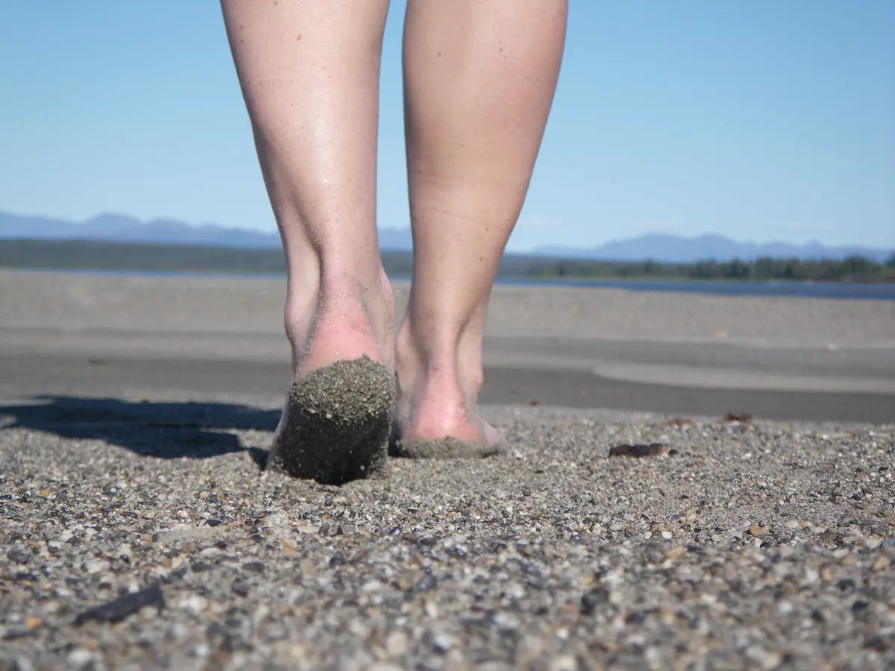

Pies cuidados, pasos tranquilos
Consulta de podología en el centro de Oviedo.
¿Dolor o uña encarnada hoy? Llama al 985 000 001: guardamos huecos en el día.
Ver tratamientos y precios- Dónde
- A dos calles del Campo de San Francisco
- Horario
- Lunes a jueves de 9 a 19, viernes hasta las 15
Tratamientos
Precio cerrado antes de empezar.
| Tratamiento | Para qué | Duración | Precio |
|---|---|---|---|
| Quiropodia | Uñas, durezas y callos | 30 min | 28 € |
| Uña encarnada | Alivio y corrección sin prisas | 30 min | 35 € |
| Estudio de la pisada | Dolor al andar o correr | 60 min | 60 € |
| Plantillas a medida | Tras el estudio, con revisión | 2 visitas | desde 130 € |
| Pie diabético | Revisión de piel y sensibilidad | 40 min | 32 € |
| Papiloma plantar | Valoración y plan por sesiones | 30 min | 30 € |
| Pie infantil | Cómo pisa y cómo calza | 30 min | 30 € |

Lo normal es andar sin notar los pies. Si los notas, conviene mirarlo.
La primera visita
Media hora, sin batas que asusten.
Te escuchamos
Qué te molesta, desde cuándo y con qué calzado.
Miramos el pie y la marcha
Si hace falta algo más, te lo decimos antes de hacerlo.
Sales sabiendo qué toca
Tratamiento, precio y cada cuánto volver, por escrito.
Preguntas frecuentes
¿Duele quitar una uña encarnada?
En la mayoría de casos se resuelve sin cirugía. Si hay que intervenir, se hace con anestesia local y te lo explicamos antes.
¿Cada cuánto debería venir?
Depende del pie. Con diabetes o problemas de circulación, cada pocos meses. Si no, cuando algo moleste.
¿Necesito volante o seguro?
No. Vienes como paciente particular y te damos factura para tu mutua si la admite.
¿Qué llevo al estudio de la pisada?
El calzado que más usas, el de deporte si corres y pantalón que se pueda remangar.
¿Puedo cancelar la cita?
Sí, avisando el día anterior por teléfono.
Dónde estamos
Calle de la Vereda Clara, 12, 1.º33003 Oviedo
Con ascensor y sin barreras.